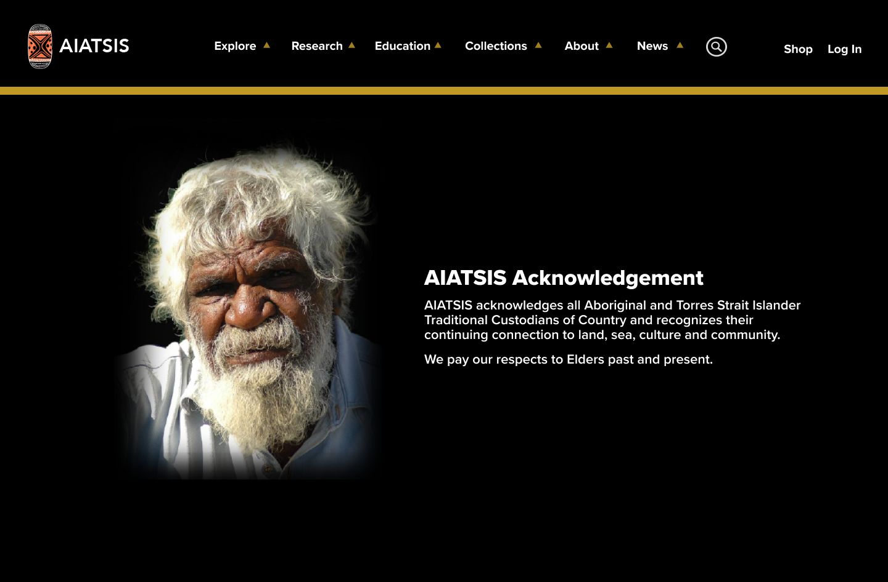

Welcome! Vicky is a versatile UXUI Designer & Developer with a rich background in graphic design, photography, illustration, and coding. With over 5 years of experience, a multidisciplinary approach is brought to every project undertaken. As a graphic designer, a keen eye for aesthetics, typography, and composition has been developed. Proficiency in translating complex ideas into visually appealing designs across various platforms has been achieved. The goal is to create visually compelling experiences that engage and captivate users.
Excitement abounds to embark on new projects and make meaningful contributions to the world of UXUI Design & Developer. If seeking a dedicated designer with a strong foundation in design, photography, illustration, and coding, collaboration would be thrilled to happen. Let's create something extraordinary together!
Case Study Page For:
Project UX_UI_HW_20
AIATSIS Case Study
Taking a government site and Enhancing the site's user experience